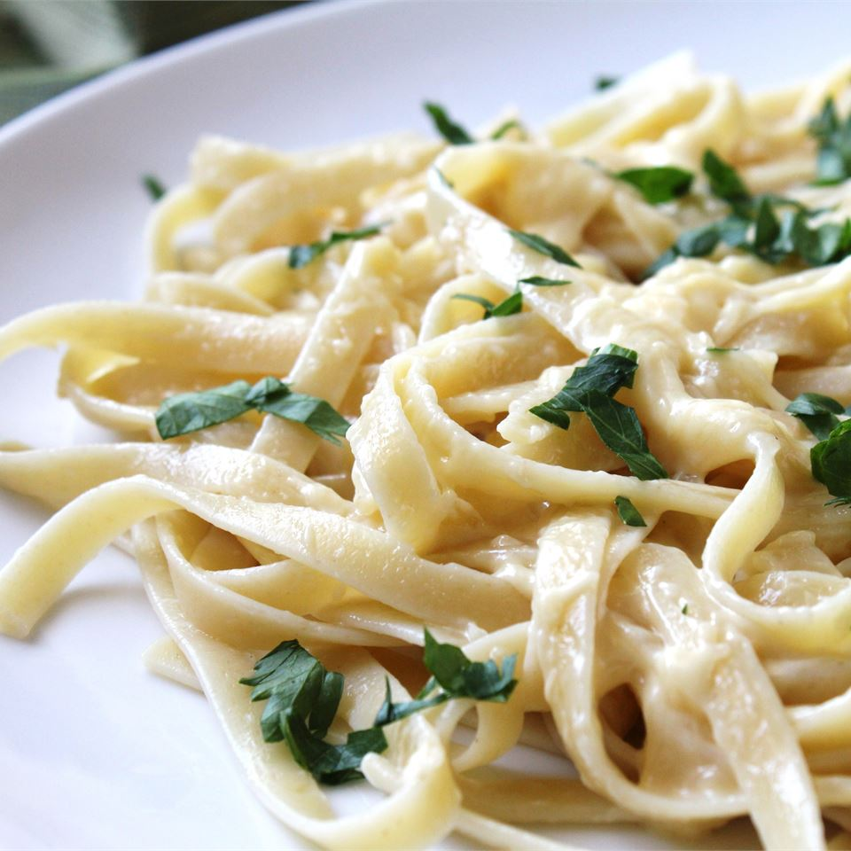
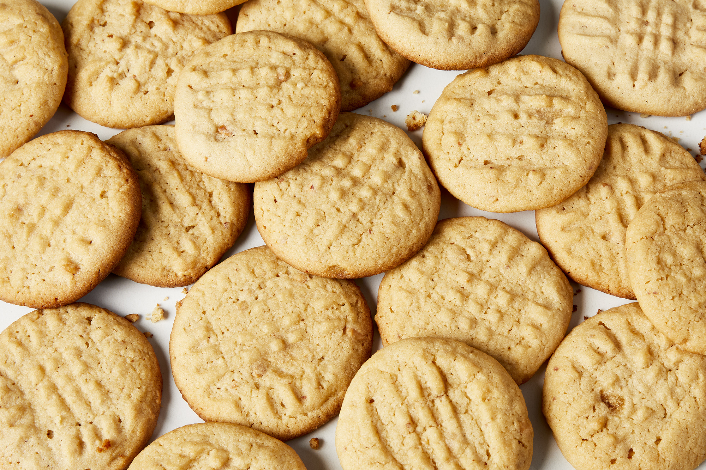

Odin Recipes
World's Best Lasagna
It takes a little work, but it is worth it.

Alfredo Sauce
Rich and creamy! I have found that Parmesan cheese doesn't melt well, and often substitute Gruyere cheese.

Classic Peanut Butter Cookies
Makes great cookies!.